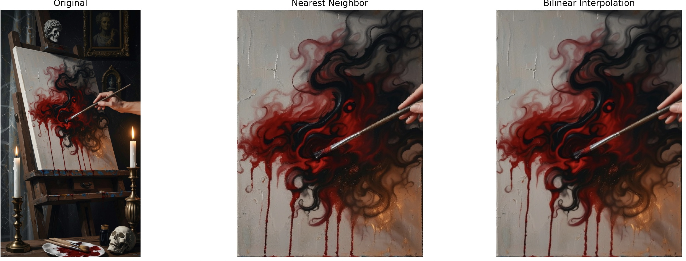

A.2: Recover Homographies
To compute the homography between two images, the correspondences are first marked manually and stored in a txt file.

Once 1-1 point to point correspondences are established, homography is computed via least squares.
Below is the code snippet along with comments that compute the homography matrix.
Compute homography
def compute_homography(pts1_n, pts2_n):
A = []
# Populate the A matrix to form Ah = 0
for (x, y), (u, v) in zip(pts1_n, pts2_n):
A.append([x, y, 1, 0, 0, 0, -u*x, -u*y, -u])
A.append([0, 0, 0, x, y, 1, -v*x, -v*y, -v])
A = np.array(A)
# Compute the SVD of A
U, S, Vt = np.linalg.svd(A)
# Last column of V or last row of V transpose is the least squares solution to Ah = 0
H = Vt[-1,:].reshape(3,3)
# The scale is factored out from the homography matrix
H /= H[-1,-1]
return H
Estimated homography between left and mid image
[[ 1.69867416e+00 4.05641368e-02 -1.20704547e+03]
[ 2.37761687e-01 1.43178785e+00 -5.77526132e+02]
[ 1.65231738e-04 2.09763667e-05 1.00000000e+00]]
Estimated homography between right and mid image
[[ 5.07890256e-01 4.81447356e-03 8.33327316e+02]
[-2.01050693e-01 7.71031301e-01 3.65449108e+02]
[-1.21041275e-04 -4.04771370e-06 1.00000000e+00]]
A.3: Warp the Images
In this section, a planar object in the projective plane i.e. image plane is transformed to a
front facing plane with dimensions of choice. Inverse Warping is used to avoid holes and two
different techniques are tested for interpolation.

| Interpolation Method |
Visual Quality |
Computation Time (ms) |
| Nearest Neighbor |
Pixelated edges, blocky artifacts |
7.9 (Faster) |
| Bilinear Interpolation |
Smoother transitions, better continuity |
15.3 (Slower) |
A.4: Blend the Images into a Mosaic
The three images shown in section A.4 were used to create a mosaic. The procedure is briefly explained below
- Warp each image to the middle or center frame using the computed homographies.
- Compute the bounds of the canvas that will constitute the output blended image consisting of all the frames by getting the min and max values of the warped image corners.
- Each warped image will have to be translated according to the min bounds computed above to accomodate the entire extent of the input images within the final output.
- Compute the corresponding binary masks for each warped image.
- To blend these warped images seamlessly, two methods are explored - weighted average and feathering technique.
- Weighted average blends by proportional contribution of overlapping pixels. The seams between the images can be seen slightly (especially on the left white wall above the fireplace). This is exaggerated further for easy viewing.
- Feathering blends softly near boundaries using gradual fall-off weights. Distance based weights to minimize visible seams as shown below.
- It can be noticed that there is some blurring (tree leaves) and ghosting (chairs - center right). This can be attributed to the input data. All attempts were made to not translate the camera center but this cannot be 100% guaranteed with hand held capture.